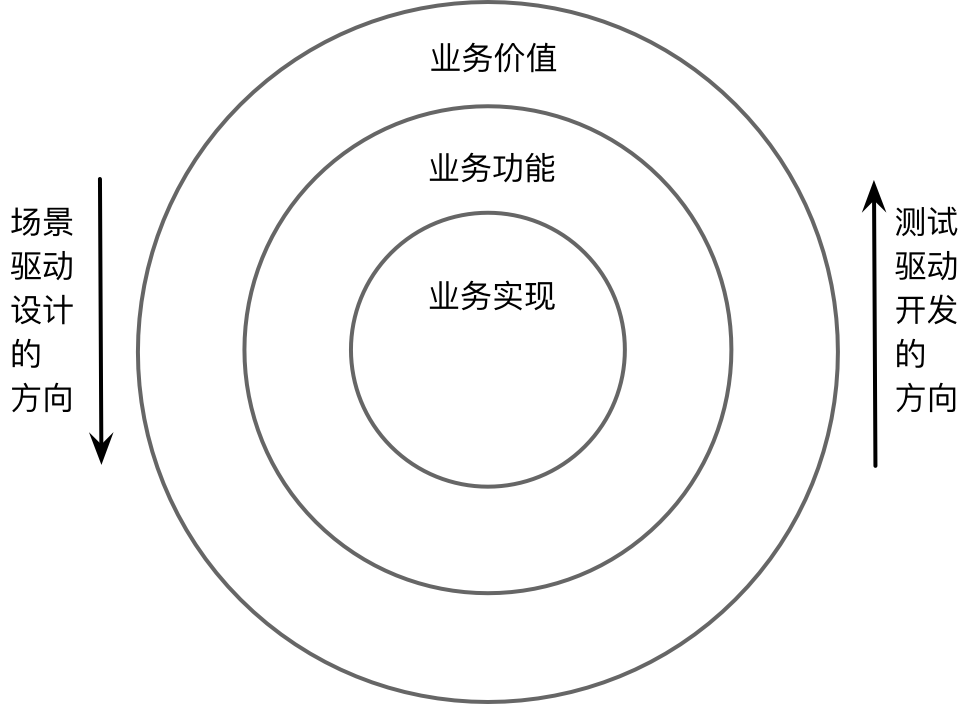
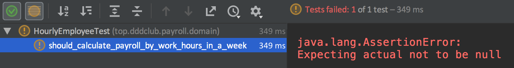

- 001 「战略篇」访谈 DDD 和微服务是什么关系？.md
- 002 「战略篇」开篇词：领域驱动设计，重焕青春的设计经典.md
- 003 领域驱动设计概览.md
- 004 深入分析软件的复杂度.md
- 005 控制软件复杂度的原则.md
- 006 领域驱动设计对软件复杂度的应对（上）.md
- 007 领域驱动设计对软件复杂度的应对（下）.md
- 008 软件开发团队的沟通与协作.md
- 009 运用领域场景分析提炼领域知识（上）.md
- 010 运用领域场景分析提炼领域知识（下）.md
- 011 建立统一语言.md
- 012 理解限界上下文.md
- 013 限界上下文的控制力（上）.md
- 014 限界上下文的控制力（下）.md
- 015 识别限界上下文（上）.md
- 016 识别限界上下文（下）.md
- 017 理解上下文映射.md
- 018 上下文映射的团队协作模式.md
- 019 上下文映射的通信集成模式.md
- 020 辨别限界上下文的协作关系（上）.md
- 021 辨别限界上下文的协作关系（下）.md
- 022 认识分层架构.md
- 023 分层架构的演化.md
- 024 领域驱动架构的演进.md
- 025 案例 层次的职责与协作关系（图文篇）.md
- 026 限界上下文与架构.md
- 027 限界上下文对架构的影响.md
- 028 领域驱动设计的代码模型.md
- 029 代码模型的架构决策.md
- 030 实践 先启阶段的需求分析.md
- 031 实践 先启阶段的领域场景分析（上）.md
- 032 实践 先启阶段的领域场景分析（下）.md
- 033 实践 识别限界上下文.md
- 034 实践 确定限界上下文的协作关系.md
- 035 实践 EAS 的整体架构.md
- 036 「战术篇」访谈：DDD 能帮开发团队提高设计水平吗？.md
- 037 「战术篇」开篇词：领域驱动设计的不确定性.md
- 038 什么是模型.md
- 039 数据分析模型.md
- 040 数据设计模型.md
- 041 数据模型与对象模型.md
- 042 数据实现模型.md
- 043 案例 培训管理系统.md
- 044 服务资源模型.md
- 045 服务行为模型.md
- 046 服务设计模型.md
- 047 领域模型驱动设计.md
- 048 领域实现模型.md
- 049 理解领域模型.md
- 050 领域模型与结构范式.md
- 051 领域模型与对象范式（上）.md
- 052 领域模型与对象范式（中）.md
- 053 领域模型与对象范式（下）.md
- 054 领域模型与函数范式.md
- 055 领域驱动分层架构与对象模型.md
- 056 统一语言与领域分析模型.md
- 057 精炼领域分析模型.md
- 058 彩色 UML 与彩色建模.md
- 059 四色建模法.md
- 060 案例 订单核心流程的四色建模.md
- 061 事件风暴与业务全景探索.md
- 062 事件风暴与领域分析建模.md
- 063 案例 订单核心流程的事件风暴.md
- 064 表达领域设计模型.md
- 065 实体.md
- 066 值对象.md
- 067 对象图与聚合.md
- 068 聚合设计原则.md
- 069 聚合之间的关系.md
- 070 聚合的设计过程.md
- 071 案例 培训领域模型的聚合设计.md
- 072 领域模型对象的生命周期-工厂.md
- 073 领域模型对象的生命周期-资源库.md
- 074 领域服务.md
- 075 案例 领域设计模型的价值.md
- 076 应用服务.md
- 077 场景的设计驱动力.md
- 078 案例 薪资管理系统的场景驱动设计.md
- 079 场景驱动设计与 DCI 模式.md
- 080 领域事件.md
- 081 发布者—订阅者模式.md
- 082 事件溯源模式.md
- 083 测试优先的领域实现建模.md
- 084 深入理解简单设计.md
- 085 案例 薪资管理系统的测试驱动开发（上）.md
- 086 案例 薪资管理系统的测试驱动开发（下）.md
- 087 对象关系映射（上）.md
- 088 对象关系映射（下）.md
- 089 领域模型与数据模型.md
- 090 领域驱动设计对持久化的影响.md
- 091 领域驱动设计体系.md
- 092 子领域与限界上下文.md
- 093 限界上下文的边界与协作.md
- 094 限界上下文之间的分布式通信.md
- 095 命令查询职责分离.md
- 096 分布式柔性事务.md
- 097 设计概念的统一语言.md
- 098 模型对象.md
- 099 领域驱动设计参考过程模型.md
- 100 领域驱动设计的精髓.md
- 101 实践 员工上下文的领域建模.md
- 102 实践 考勤上下文的领域建模.md
- 103 实践 项目上下文的领域建模.md
- 104 实践 培训上下文的业务需求.md
- 105 实践 培训上下文的领域分析建模.md
- 106 实践 培训上下文的领域设计建模.md
- 107 实践 培训上下文的领域实现建模.md
- 108 实践 EAS 系统的代码模型.md
- 109 后记：如何学习领域驱动设计.md
085 案例 薪资管理系统的测试驱动开发（上）
回顾薪资管理系统的设计建模
在 3-15 课，我们通过场景驱动设计完成了薪资管理系统的领域设计建模。既然场景驱动设计可以很好地与测试驱动开发融合在一起，因此根据场景驱动设计的成果来开展测试驱动开发，就是一个水到渠成的过程。让我们先来看看针对薪资管理系统“支付薪资”领域场景分解的任务：
- 确定是否支付日期
- 确定是否为周五
- 确定是否为月末工作日
- 获取当月的假期信息
- 确定当月的最后一个工作日
- 确定是否为间隔一周周五
- 获取上一次销售人员的支付日期
- 确定是否间隔了一周
- 计算雇员薪资
- 计算钟点工薪资
- 获取钟点工雇员与工作时间卡
- 根据雇员日薪计算薪资
- 计算月薪雇员薪资
- 获取月薪雇员与考勤记录
- 对月薪雇员计算月薪
- 计算销售人员薪资
- 获取销售雇员与销售凭条
- 根据酬金规则计算薪资
- 计算钟点工薪资
- 支付
- 向满足条件的雇员账户发起转账
- 生成支付凭条
根据任务分解驱动出来的时序图完整脚本则如下所示：
PaymentAppService.pay() {
PaymentService.pay() {
PayDayService.isPayday(today) {
Calendar.isFriday(today);
WorkdayService.isLastWorkday(today) {
HolidayRepository.ofMonth(month);
Calendar.isLastWorkday(holidays);
}
WorkdayService.isIntervalFriday(today) {
PaymentRepository.lastPayday(today);
Calendar.isFriday(today);
}
}
PayrollCalculator.calculate(employees) {
HourlyEmployeePayrollCalculator.calculate() {
HourlyEmployeeRepository.all();
while (employee -> List<HourlyEmployee>) {
employee.payroll(PayPeriod);
}
}
SalariedEmployeePayrollCalculator.calculate() {
SalariedEmployeeRepository.all();
while (employee -> List<SalariedEmployee>) {
employee.payroll();
}
}
CommissionedEmployeePayrollCalculator.calculate() {
CommissionedEmployeeRepository.all();
while (employee -> List<CommissionedEmployee>) {
employee.payroll(payPeriod);
}
}
}
PayingPayrollService.execute(employees) {
TransferClient.transfer(account);
PaymentRepository.add(payment);
}
}
}
测试驱动的方向
有了分解的任务，也有了履行职责的各个角色构造型，现在是万事俱备只欠东风。让我们严格按照测试驱动开发的红绿黄节奏以及三定律开展领域实现建模。首先，我们要选择需要添加测试的新功能。场景驱动设计在分解任务时，是从外部代表业务价值的领域场景逐步向内推进和拆分的，这是一个从外向内的驱动设计方向；测试驱动开发则不同，为了尽可能避免编写需要模拟的单元测试，应该从内部代表业务实现的原子任务开始，先完成细粒度的自给自足的领域行为逻辑单元，然后逐步往外推进，直到完成满足完整领域场景的所有任务，这是一个从内向外的驱动开发方向：

这就意味着在开始测试驱动开发之前，我们需要选择合适的任务。需要考虑的因素包括：
- 任务的依赖性
- 任务的重要性
从依赖的角度看，并不一定需要优先选择前序任务，因为我们可以使用模拟的方式驱动出当前任务需要依赖的接口，而无需考虑实现。不过，基于场景驱动开发分解的任务层次，为其编写测试用例时，也应优先挑选无需访问外部资源的原子任务，即为聚合编写单元测试，因为它无需任何模拟行为。至于任务的重要性，主要是判断任务是否整个系统或模块的核心功能。在确定了领域场景的前提下，一个判断标准是确定任务是主要流程还是异常流程。通常而言，应优先考虑任务的主流程。
显然，支付薪资领域场景的核心功能是支付与薪资计算。由于支付由外部服务完成，剩下要实现的核心功能就是薪资计算。如果从原子任务开始挑选，应首先从内部的原子任务开始挑选，例如选择“根据雇员日薪计算薪资”原子任务：
- 计算雇员薪资
- 计算钟点工薪资
- 获取钟点工雇员与工作时间卡
- 根据雇员日薪计算薪资
- 计算月薪雇员薪资
- 获取月薪雇员与考勤记录
- 对月薪雇员计算月薪
- 计算销售人员薪资
- 获取销售雇员与销售凭条
- 根据酬金规则计算薪资
- 计算钟点工薪资
测试驱动开发的过程
编写失败的测试
现在需要为该子任务编写测试用例。根据钟点工薪资的计算规则，可以分为两个不同的测试用例：正常工作时长和加班工作时长。由于场景驱动设计已经确定了履行该原子任务职责的是 HourlyEmployee，遵循测试驱动开发的定律一“一次只写一个刚好失败的测试，作为新加功能的描述”，编写一个刚好失败的测试：
public class HourlyEmployeeTest {
@Test
public void should_calculate_payroll_by_work_hours_in_a_week() {
}
}
按照 Given-When-Then 模式来编写该测试方法。首先考虑 HourlyEmployee 聚合的创建。由于钟点工每天都要提交工作时间卡，薪资按周结算，因此在创建 HourlyEmployee 聚合根的实例时，需要传入工作时间卡的列表。计算薪资的方法为 payroll()，返回结果为薪资模型对象 Payroll。验证时，需确保薪资的结算周期与薪资总额是正确的。故而编写的测试方法为：
@Test
public void should_calculate_payroll_by_work_hours_in_a_week() {
//given
TimeCard timeCard1 = new TimeCard(LocalDate.of(2019, 9, 2), 8);
TimeCard timeCard2 = new TimeCard(LocalDate.of(2019, 9, 3), 8);
TimeCard timeCard3 = new TimeCard(LocalDate.of(2019, 9, 4), 8);
TimeCard timeCard4 = new TimeCard(LocalDate.of(2019, 9, 5), 8);
TimeCard timeCard5 = new TimeCard(LocalDate.of(2019, 9, 6), 8);
List<TimeCard> timeCards = new ArrayList<>();
timeCards.add(timeCard1);
timeCards.add(timeCard2);
timeCards.add(timeCard3);
timeCards.add(timeCard4);
timeCards.add(timeCard5);
HourlyEmployee hourlyEmployee = new HourlyEmployee(timeCards, Money.of(10000, Currency.RMB));
//when
Payroll payroll = hourlyEmployee.payroll();
//then
assertThat(payroll).isNotNull();
assertThat(payroll.beginDate()).isEqualTo(LocalDate.of(2019, 9, 2));
assertThat(payroll.endDate()).isEqualTo(LocalDate.of(2019, 9, 6));
assertThat(payroll.amount()).isEqualTo(Money.of(400000, Currency.RMB));
}
运行测试，失败：

让失败的测试刚好通过
在实现测试时，遵循测试驱动开发定律二“不写任何产品代码，除非它刚好能让失败的测试通过”，在实现 payroll() 方法时，仅提供满足当前测试用例预期的实现。什么是“刚好能让失败的测试通过”？以当前测试方法为例。要计算钟点工的薪资，除了它提供的工作时间卡之外，还需要钟点工的时薪，至于 HourlyEmployee 的其他属性，暂时可不用考虑；当前测试方法没有要求验证工作时间卡的有效性，在实现时，亦不必验证传入的工作时间卡是否符合要求，只需确保为测试方法准备的数据是正确的即可；当前测试方法是针对正常工作时长计算薪资，实现时就无需考虑加班的情况。实现代码为：
public class HourlyEmployee {
private List<TimeCard> timeCards;
private Money salaryOfHour;
public HourlyEmployee(List<TimeCard> timeCards, Money salaryOfHour) {
this.timeCards = timeCards;
this.salaryOfHour = salaryOfHour;
}
public Payroll payroll() {
int totalHours = timeCards.stream()
.map(tc -> tc.workHours())
.reduce(0, (hours, total) -> hours + total);
Collections.sort(timeCards);
return new Payroll(timeCards.get(0).workDay(), timeCards.get(timeCards.size() - 1).workDay(), salaryOfHour.multiply(totalHours));
}
}
在编写让失败测试通过的代码时，要把握好分寸，既不要过度地实现测试没有覆盖的内容，也无需死板地拘泥于编写所谓“简单”的实现代码。简单并非简陋，既然你的编码技能与设计水平已经足以一次编写出优良的代码，就不必一定要拖到最后，多此一举地等待重构来改进。例如，在上述实现代码中，需要将工作总小时数乘以 Money 类型的时薪，你当然可以实现为如下代码：
new Money(salaryOfHour.value() * totalHours, salaryOfHour.currency())
然而，如果你已经熟悉迪米特法则，且认识到以数据提供者形式进行对象协作的弊病，就会自然地想到应该在 Money 中定义 multiply() 方法，而非通过公开 value 和 currency 的 get 访问器让调用者完成乘法计算。这时就可直接实现如下代码，而不必等着以后再来进行重构：
public class Money {
private final long value;
private final Currency currency;
public static Money of(long value, Currency currency) {
return new Money(value, currency);
}
private Money(long value, Currency currency) {
this.value = value;
this.currency = currency;
}
public Money multiply(int factor) {
return new Money(value * factor, currency);
}
@Override
public boolean equals(Object o) {
if (this == o) return true;
if (o == null || getClass() != o.getClass()) return false;
Money money = (Money) o;
return value == money.value &&
currency == money.currency;
}
@Override
public int hashCode() {
return Objects.hash(value, currency);
}
}
简单说来，在不会导致过度设计的前提下，若能直接编写出整洁的代码，又何乐而不为呢？只需要做到实现的代码仅仅能让测试刚好通过，不去过度设计即可。为了让测试方法通过，我们定义并实现了 HourlyEmployee、TimeCard 与 Payroll 等领域模型对象。它们的定义都非常简单，即使你知道 HourlyEmployee 一定还有 Id 和 name 等基本的核心字段，也不必在现在就给出这些字段的定义。利用测试驱动开发来实现领域模型，重要的一点就是要用测试来驱动出这些模型对象的定义。只要不会遗漏领域场景，就一定会有测试去覆盖这些领域逻辑。一次只做好一件事情即可。
现在测试变绿了：

在测试通过的情况下，先不要考虑是重构还是编写新的测试，而应提交代码。持续集成强调七步提交法，其基础就是进行频繁的原子提交。这样就能保证尽快将你的最新变更反馈到团队共享的代码库上，降低代码冲突的风险，同时也能为重构设定一个安全的回滚版本。
重构产品代码和测试代码
提交代码后，根据简单设计原则，我们需要检查已有实现与测试代码是否存在重复，是否清晰地表达了设计者意图。
先看产品代码，目前的实现并没有重复代码，但是 payroll() 方法中的代码 Collections.sort(timeCards); 会让人产生困惑：为什么需要对工作时间卡排序？显然，这里缺乏对业务含义的封装，直接将实现暴露出来了。排序仅仅是手段，我们的目标是获得结算薪资的开始日期和结束日期。由于返回的是两个值，且这两个值代表了一个内聚的概念，故而可以定义一个内部概念 Peroid。重构的过程是首先提取 beginDate 和 endDate 变量，然后定义 Period 内部类：
public Payroll payroll() {
int totalHours = timeCards.stream()
.map(tc -> tc.workHours())
.reduce(0, (hours, total) -> hours + total);
Collections.sort(timeCards);
LocalDate beginDate = timeCards.get(0).workDay();
LocalDate endDate = timeCards.get(timeCards.size() - 1).workDay();
Period settlementPeriod = new Period(beginDate, endDate);
return new Payroll(settlementPeriod.beginDate, settlementPeriod.endDate, salaryOfHour.multiply(totalHours));
}
private class Period {
private LocalDate beginDate;
private LocalDate endDate;
Period(LocalDate beginDate, LocalDate endDate) {
this.beginDate = beginDate;
this.endDate = endDate;
}
}
然后，再提取方法 settlementPeriod()。该方法名直接体现其业务目标，并将包括排序在内的实现细节封装起来：
public Payroll payroll() {
int totalHours = timeCards.stream()
.map(tc -> tc.workHours())
.reduce(0, (hours, total) -> hours + total);
return new Payroll(
settlementPeriod().beginDate,
settlementPeriod().endDate,
salaryOfHour.multiply(totalHours));
}
private Period settlementPeriod() {
Collections.sort(timeCards);
LocalDate beginDate = timeCards.get(0).workDay();
LocalDate endDate = timeCards.get(timeCards.size() - 1).workDay();
return new Period(beginDate, endDate);
}
接下来，不要忘了对测试代码的重构。毫无疑问，创建 List
public class HourlyEmployeeTest {
@Test
public void should_calculate_payroll_by_work_hours_in_a_week() {
//given
List<TimeCard> timeCards = createTimeCards();
Money salaryOfHour = Money.of(10000, Currency.RMB);
HourlyEmployee hourlyEmployee = new HourlyEmployee(timeCards, salaryOfHour);
//when
Payroll payroll = hourlyEmployee.payroll();
//then
assertThat(payroll).isNotNull();
assertThat(payroll.beginDate()).isEqualTo(LocalDate.of(2019, 9, 2));
assertThat(payroll.endDate()).isEqualTo(LocalDate.of(2019, 9, 6));
assertThat(payroll.amount()).isEqualTo(Money.of(400000, Currency.RMB));
}
private List<TimeCard> createTimeCards() {
TimeCard timeCard1 = new TimeCard(LocalDate.of(2019, 9, 2), 8);
TimeCard timeCard2 = new TimeCard(LocalDate.of(2019, 9, 3), 8);
TimeCard timeCard3 = new TimeCard(LocalDate.of(2019, 9, 4), 8);
TimeCard timeCard4 = new TimeCard(LocalDate.of(2019, 9, 5), 8);
TimeCard timeCard5 = new TimeCard(LocalDate.of(2019, 9, 6), 8);
List<TimeCard> timeCards = new ArrayList<>();
timeCards.add(timeCard1);
timeCards.add(timeCard2);
timeCards.add(timeCard3);
timeCards.add(timeCard4);
timeCards.add(timeCard5);
return timeCards;
}
}